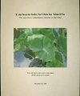

-
Mālama Hāloa, Protecting the Taro, with Jerry Konanui
Nālama Maka o ka ‘Āina
An educational documentary DVD produced by Nā Maka o ka ‘Āina about Hawaiian kalo and the environment. This video features Native Hawaiian practitioner Jerry Konanui and his work to protect his kupuna, Hāloa the taro, min. 39:12.
-
Kahuaola, The Houlu Hou Project: Stories Told By Us.
Kamoa Elehua Walk and H. Kaumealani K. Walk
Brigham Young University of Hawaii. The story of a boy named Pouli Magalei. One of Pouli’s favorite places is Kahuaola, the lo‘i kalo (taro patch), “A place of learning for everyone who comes here.” Here, with the guidance of his kopuna kāne (grandfather), Pouli helps plant, harvest, cook, peel, and pound the kalo—and eat the delicious poi, this most important of foods.
-
Taro Varieties in Hawai‘i, Bulletin 84
Leo D. Whitney, F. A. I. Bowers, and M. Takahashi
Taro Varieties in Hawai‘i, Bulletin 84 provides taro descriptions of all the kupuna varieties. Published 1939. Hawai‘i Agricultural Experiment Station, University of Hawai‘i. College of Tropical Agriculture & Human Resources (CTAHR). Available for purchase at CTAHR.hawaii.edu. Also available for free as a PDF at CTAHR.hawaii.edu.
-
Taro Mauka To Makai, A Taro Production and Business Guide for Hawaii Growers.
College of Tropical Agriculture & Human Resources.
This is a kalo planting, growing and use as food guide with detailed drawings and photos. College of Tropical Agriculture & Human Resources. Available for purchase at CTAHR.hawaii.edu.
-
Native Planters In Old Hawai‘i, Their Life, Lore, and Environment
E. S. Craighill Handy, Elizabeth Green Handy and Mary Kawena Pukui
Native Planters In Old Hawai‘i, Their Life, Lore, and Environment describes the Hawaiian planting culture, kalo’s use as food, land divisions, water rights and irrigation techniques. Bishop Museum Press.
-
From Then To Now, A Manual For Doing Things Hawaiian Style
Walter Keliiokekai Paulo, William T. S. “Pops” Raposa, Beatrice Kealaonaona Likua, Carl S. K. Young, Donna A. H. Smith, Duncan K
Instructions on how grow taro, sweet potatoes, coconut, breadfruit, and ti; how to make a hala lei and imu; how to use ti leaves; fishing Hawaiian style; and how to cut, clean, and dry fish. Opelu Project. Waianae Coast Community.
-

Hāloa
Story and Translation by Kimo Armitage, Illustrations by Solomon Enos, Educational Section by Sharon Kaiulani Odom.
Hāloa is one of the most important stories in Hawaiian culture. this version, adapted from the Chant of Pāku‘i, details the origin of the Hawaiian islands and the first human, born of a kalo plant. As part of the Kamehameha Schools ‘E Ola Pono health curriculum, Hāloa provides an important perspective on healthy living and respect for our homeland, Hawaii. Kamehameha Schools Publishing
-

Hawaiian Dictionary
Mary Kawena Pukui, Samuel H. Elbert.
The most complete Hawaiian-English dictionary. University of Hawaii Press.
-

Taro Security and Purity Task Force
18 member Task Force; 14 taro farmers, & reps for ‘Onipa‘a Nā Hui Kalo & OHA
In this 2010 Legislative Report, taro farmers, & taro itself offer guidance for research and solutions to problems taro farmers are facing. It presents in depth experience & knowledge of the taro community combined with the resources of state agencies & the University of Hawai‘i. (108 pages) This report is available for free at: Oha.org.